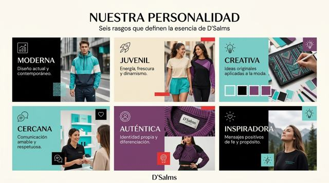
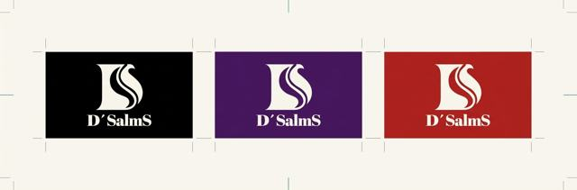
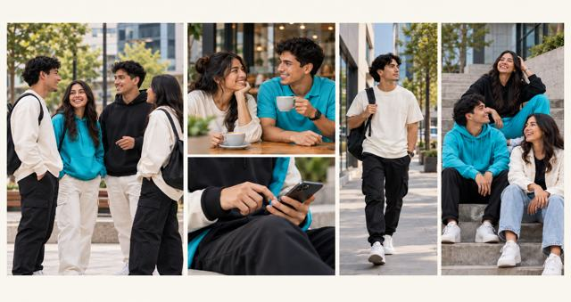
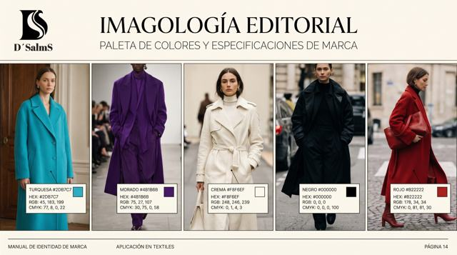
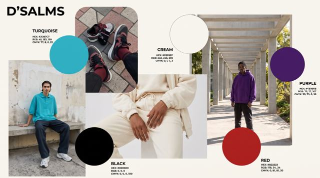
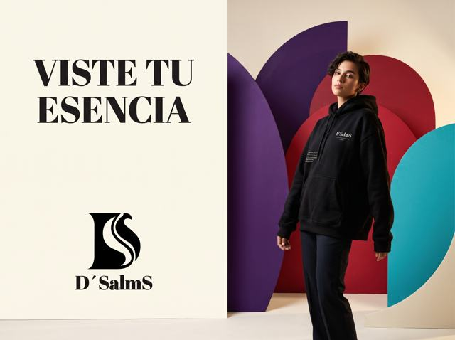

Objetivo general
Describir la percepción de la identidad visual, las prendas y la comunicación de D’Salms mediante un cuestionario cerrado de 10 preguntas y 15 registros.
Percepción, identidad y comunicación de D’Salms.
La imagen pública de una marca es lo que su público percibe de ella: lo que ve, lo que entiende y lo que siente. Este estudio organiza esa percepción para D’Salms con un cuestionario de 10 preguntas y 15 registros.
D’Salms nació en 2026 en Pichanaqui y une fe cristiana, diseño gráfico y moda contemporánea. Al ser una marca nueva, conocer cómo se perciben su logotipo, colores, prendas y mensajes ayuda a decidir qué reforzar primero.

Describir la percepción de la identidad visual, las prendas y la comunicación de D’Salms mediante un cuestionario cerrado de 10 preguntas y 15 registros.
La percepción indica si colores, símbolo y mensajes se entienden como una propuesta coherente, y orienta las decisiones de catálogo, redes y web antes de invertir en ellas.
Símbolo DS, Kalnia y DM Sans, cinco colores oficiales y piezas gráficas: son lo que el público evalúa en las preguntas.

Conjunto de ideas, impresiones y valoraciones que los públicos se forman de una marca a partir de su identidad visual, sus productos y su comunicación.
Se analiza en tres planos: lo que se reconoce y comprende (cognitivo), lo que agrada y emociona (afectivo) y lo que se elige y se hace (conductual).

Los 15 registros son datos de práctica creados para demostrar el tratamiento de la información; no son un levantamiento de campo y describen solo este conjunto.
| Instrumento | Cuestionario de 10 preguntas cerradas, de alternativa única |
|---|---|
| Base | 15 registros anónimos (A01–A15) |
| Volumen | 150 respuestas (15 × 10) |
| Alcance | Tabulación y análisis de percepción visual |
| Naturaleza | Datos de práctica, no trabajo de campo |
| Limitación | No generalizable a los clientes de Pichanaqui |
Siete preguntas de valoración (P1–P7, cinco niveles) y tres de preferencia (P8–P10). El instrumento es anónimo y no solicita datos personales. Abre cada pregunta para ver sus alternativas.
Todas las tablas y gráficos de esta página se calculan desde esta misma matriz. Las columnas P1–P7 se colorean según la valoración: turquesa para lo más favorable, rojo claro para «Regular».
Cada tarjeta lleva al gráfico correspondiente. Dentro de cada gráfico encontrarás su tabla de frecuencias, el porcentaje y la lectura.


Pasa el cursor o toca una porción para ver su valor. El orden de los gráficos sigue el de las preguntas.
Suma de las dos opciones más favorables de cada pregunta.
Agrupación propuesta para el análisis: cada pregunta se asigna al plano que mejor describe.
Instagram es el canal más elegido. «Página web» no recibe ninguna elección en este conjunto, por lo que las novedades deberían difundirse primero por redes.
Publicaciones y redes comparte el primer lugar con variedad de prendas, lo que respalda la propuesta de un calendario editorial.
La reputación digital se medirá con registros verificables y fechados; por eso figura como debilidad en la matriz FODA.
Selecciona un cuadrante para destacarlo. Esta matriz es la misma que se usa en el Plan de Comunicación.
Programar publicaciones centradas en Instagram, el canal más elegido.
Base: P9 · P10 · Oportunidad: contenido editorialUnificar fotografías e información de cada prenda.
Base: P10 · Debilidad: estandarizar fichasAmpliar la oferta conectando cada colección con un mensaje de fe.
Base: P8 · P10 · Oportunidad: colecciones con mensajeVerificar enlaces y fortalecer la información de contacto.
Base: P10 · Debilidad: contacto y atenciónAplicar una encuesta real con consentimiento y repetirla.
Base: límite del estudio · Debilidad: reputación digitalOrden de trabajo propuesto; no son fechas ni resultados logrados.
Fichas y fotografía de prendas.
Contenido de colecciones en redes.
Encuesta real, con consentimiento.
Información de contacto.
Consultas reales y tiempos de respuesta.
Metas de trabajo, no resultados logrados.
| Prioridad | Acción recomendada | Indicador | Evidencia necesaria |
|---|

Viste tu esencia.